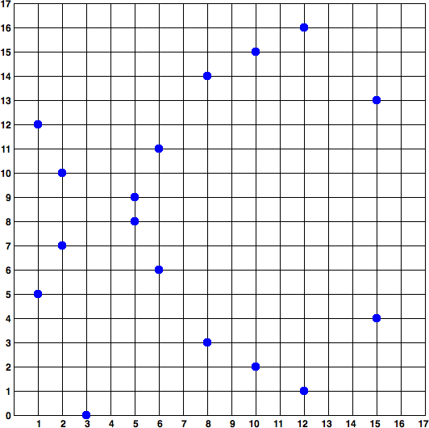

Ключи и адреса
Одной из основополагающих технологий Ethereum является криптография, которая представляет собой отрасль математики, широко используемую в компьютерной безопасности. Криптография в переводе с греческого означает "тайнопись", но изучение криптографии включает в себя не только тайнопись, которую называют шифрованием. Криптография может, например, использоваться для доказательства знания секрета без раскрытия этого секрета (например, с помощью цифровой подписи) или для доказательства подлинности данных (например, с помощью цифровых отпечатков пальцев, также известных как "хэши"). Эти типы криптографических доказательств являются математическими инструментами, критически важными для работы платформы Ethereum (и, по сути, всех систем блокчейн), а также широко используются в приложениях Ethereum.
Обратите внимание, что на момент публикации ни одна часть протокола Ethereum не включает шифрование; то есть все коммуникации с платформой Ethereum и между узлами (включая данные транзакций) не зашифрованы и могут (обязательно) быть прочитаны любым человеком. Это делается для того, чтобы каждый мог проверить корректность обновлений состояния и достичь консенсуса. В будущем появятся усовершенствованные криптографические инструменты, такие как доказательства нулевого знания и гомоморфное шифрование, которые позволят записывать некоторые зашифрованные вычисления в блокчейн, сохраняя при этом возможность консенсуса; однако, несмотря на то, что они уже предусмотрены, их еще предстоит внедрить.
В этой главе мы познакомимся с некоторыми видами криптографии, используемыми в Ethereum: а именно с криптографией с открытым ключом (PKC), которая используется для контроля за владением средствами в виде закрытых ключей и адресов.
Ключи и адреса
Как мы видели ранее в этой книге, в Ethereum существует два различных типа счетов: счета, принадлежащие внешним владельцам (EOA), и контракты. Право собственности на эфир для EOA устанавливается с помощью цифровых закрытых ключей, адресов Ethereum и цифровых подписей. Закрытые ключи лежат в основе всего взаимодействия пользователей с Ethereum. Фактически, адреса аккаунтов определяются непосредственно из закрытых ключей: закрытый ключ однозначно определяет один адрес Ethereum, также известный как аккаунт.
Приватные ключи никак не используются непосредственно в системе Ethereum; они никогда не передаются и не хранятся в Ethereum. Иными словами, закрытые ключи должны оставаться приватными и никогда не появляться в сообщениях, передаваемых в сеть, а также не должны храниться на цепи; в системе Ethereum передаются и хранятся только адреса счетов и цифровые подписи. Более подробную информацию о том, как обеспечить безопасность и сохранность закрытых ключей, см. в разделах [control_responsibility] и [wallets_chapter].
Доступ к средствам и контроль над ними осуществляется с помощью цифровых подписей, которые также создаются с использованием закрытого ключа. Для включения транзакций Ethereum в блокчейн требуется действующая цифровая подпись. Любой человек, обладающий копией закрытого ключа, имеет контроль над соответствующим счетом и всеми хранящимися на нем эфириумами. При условии, что пользователь хранит свой закрытый ключ в безопасности, цифровые подписи в транзакциях Ethereum доказывают истинного владельца средств, поскольку они подтверждают владение закрытым ключом.
В системах, основанных на криптографии с открытым ключом, таких как та, что используется в Ethereum, ключи поставляются в виде пар, состоящих из закрытого (секретного) и открытого ключей. Считайте, что открытый ключ похож на номер банковского счета, а закрытый ключ - на секретный PIN-код; последний обеспечивает контроль над счетом, а первый идентифицирует его для других. Сами закрытые ключи пользователи Ethereum видят очень редко; в основном они хранятся (в зашифрованном виде) в специальных файлах и управляются программным обеспечением кошелька Ethereum.
В платежной части транзакции Ethereum предполагаемый получатель представлен адресом Ethereum, который используется так же, как реквизиты счета получателя банковского перевода. Как мы вскоре увидим более подробно, Ethereum-адрес для EOA генерируется из части открытого ключа пары ключей. Однако не все адреса Ethereum представляют собой пары открытых и закрытых ключей; они также могут представлять собой контракты, которые, как мы увидим в главе [smart_contracts_chapter], не подкреплены закрытыми ключами.
В оставшейся части этой главы мы сначала немного подробнее рассмотрим основы криптографии и объясним математику, используемую в Ethereum. Затем мы рассмотрим, как генерируются, хранятся и управляются ключи. Наконец, мы рассмотрим различные форматы кодирования, используемые для представления закрытых ключей, открытых ключей и адресов.
Криптография с открытым ключом и криптовалюта
Криптография с открытым ключом (также называемая "асимметричной криптографией") является основной частью современной информационной безопасности. Протокол обмена ключами, впервые опубликованный в 1970-х годах Мартином Хеллманом, Уитфилдом Диффи и Ральфом Мерклом, стал монументальным прорывом, вызвавшим первую большую волну общественного интереса к области криптографии. До 1970-х годов сильные криптографические знания держались в секрете правительствами.
Криптография с открытым ключом использует уникальные ключи для защиты информации. Эти ключи основаны на математических функциях, которые обладают особым свойством: их легко вычислить, но трудно вычислить их обратную величину. На основе этих функций криптография позволяет создавать цифровые секреты и неподделываемые цифровые подписи, которые защищены законами математики.
Например, умножение двух больших простых чисел тривиально. Но если задано произведение двух больших простых чисел, то очень трудно найти простые множители (эта проблема называется простой факторизацией). Допустим, мы представим вам число 8 018 009 и скажем, что оно является произведением двух простых чисел. Найти эти два простых числа для вас гораздо сложнее, чем для меня перемножить их, чтобы получить 8,018,009.
Некоторые из этих математических функций могут быть легко перевернуты, если вы знаете некоторую секретную информацию. В предыдущем примере, если я скажу вам, что один из простых факторов равен 2,003, вы сможете тривиально найти второй с помощью простого деления: 8,018,009 ÷ 2,003 = 4,003. Такие функции часто называют функциями-ловушками, поскольку их очень трудно инвертировать, если только вам не предоставлена часть секретной информации, которая может быть использована в качестве короткого пути для обращения функции.
Более продвинутая категория математических функций, полезных в криптографии, основана на арифметических операциях на эллиптической кривой. В арифметике эллиптической кривой умножение по модулю простого числа является простым, но деление (обратное) практически невозможно. Это называется проблемой дискретного логарифма, и в настоящее время не существует известных ловушек. Криптография эллиптических кривых широко используется в современных компьютерных системах и лежит в основе использования закрытых ключей и цифровых подписей в Ethereum (и других криптовалютах).
Примечание: Если вы хотите узнать больше о криптографии и математических функциях, которые используются в современной криптографии, ознакомьтесь со следующими ресурсами:
- Криптография(https://en.wikipedia.org/wiki/Cryptography)
- Функция ловушки(https://en.wikipedia.org/wiki/Trapdoor_function)
- Прайм-факторизация(https://en.wikipedia.org/wiki/Integer_factorization)
- Дискретный логарифм(https://en.wikipedia.org/wiki/Discrete_logarithm)
- Криптография эллиптической кривой(https://en.wikipedia.org/wiki/Elliptic-curve_cryptography)
В Ethereum мы используем криптографию с открытым ключом (также известную как асимметричная криптография) для создания пары открытый-частный ключ, о которой мы говорили в этой главе. Они считаются "парой", поскольку открытый ключ является производным от закрытого ключа. Вместе они представляют учетную запись Ethereum, обеспечивая, соответственно, общедоступный дескриптор учетной записи (адрес) и частный контроль над доступом к любому эфиру на этой учетной записи и над любой аутентификацией, необходимой учетной записи при использовании смарт-контрактов. Закрытый ключ контролирует доступ, являясь уникальной частью информации, необходимой для создания цифровых подписей, которые требуются для подписания транзакций по расходованию любых средств на счете. Цифровые подписи также используются для аутентификации владельцев или пользователей контрактов, как мы увидим в [smart_contracts_chapter].
Совет: В большинстве реализаций кошельков закрытый и открытый ключи для удобства хранятся вместе как пара ключей. Однако открытый ключ может быть тривиально вычислен из закрытого ключа, поэтому хранение только закрытого ключа также возможно.
Для подписания любого сообщения может быть создана цифровая подпись. Для транзакций Ethereum в качестве сообщения используются детали самой транзакции. Математика криптографии - в данном случае криптография эллиптических кривых - позволяет объединить сообщение (т. е. детали транзакции) с закрытым ключом и создать код, который может быть получен только при знании закрытого ключа. Этот код называется цифровой подписью. Обратите внимание, что транзакция Ethereum - это, по сути, запрос на доступ к определенному счету с определенным адресом Ethereum. Когда транзакция отправляется в сеть Ethereum для перемещения средств или взаимодействия со смарт-контрактами, она должна быть отправлена с цифровой подписью, созданной с помощью закрытого ключа, соответствующего данному адресу Ethereum. Математика эллиптических кривых означает, что любой человек может проверить действительность транзакции, проверив соответствие цифровой подписи деталям транзакции и адресу Ethereum, к которому запрашивается доступ. Проверка вообще не затрагивает закрытый ключ; он остается закрытым. Однако в процессе проверки можно с уверенностью сказать, что транзакция могла быть осуществлена только человеком с закрытым ключом, соответствующим открытому ключу адреса Ethereum. В этом и заключается "магия" криптографии с открытым ключом.
Совет: В протоколе Ethereum нет шифрования - все сообщения, которые отправляются в рамках работы сети Ethereum, могут (обязательно) быть прочитаны всеми. Таким образом, закрытые ключи используются только для создания цифровых подписей для аутентификации транзакций.
Закрытые ключи
Закрытый ключ - это просто число, выбранное случайным образом. Владение и контроль над закрытым ключом является основой контроля пользователя над всеми средствами, связанными с соответствующим адресом Ethereum, а также доступа к контрактам, авторизующим этот адрес. Закрытый ключ используется для создания подписей, необходимых для расходования эфира, подтверждая право собственности на средства, используемые в транзакции. Закрытый ключ должен всегда оставаться секретным, поскольку раскрытие его третьим лицам равносильно передаче им контроля над эфиром и контрактами, обеспеченными этим закрытым ключом. Закрытый ключ также должен быть резервным и защищен от случайной потери. Если он потерян, его невозможно восстановить, и средства, обеспеченные им, также потеряны навсегда.
Совет: Закрытый ключ Ethereum - это просто номер. Один из способов случайного подбора закрытых ключей - просто использовать монету, карандаш и бумагу: подбросьте монету 256 раз, и вы получите двоичные цифры случайного закрытого ключа, который можно использовать в кошельке Ethereum (возможно - см. следующий раздел). Открытый ключ и адрес могут быть сгенерированы из закрытого ключа.
Генерация закрытого ключа из случайного числа
Первый и самый важный шаг в генерации ключей - найти надежный источник энтропии, или случайности. Создание закрытого ключа Ethereum заключается в выборе числа от 1 до 2256. Точный метод, который вы используете для выбора этого числа, не имеет значения, если он не является предсказуемым или детерминированным. Программное обеспечение Ethereum использует генератор случайных чисел операционной системы для получения 256 случайных битов. Обычно генератор случайных чисел ОС инициализируется человеческим источником случайности, поэтому вас могут попросить несколько секунд поводить мышкой или нажать случайные клавиши на клавиатуре. Альтернативой может быть шум космического излучения на канале микрофона компьютера.
Более точно, закрытым ключом может быть любое ненулевое число вплоть до очень большого числа, которое немного меньше 2256 - огромного 78-значного числа, примерно 1,158 * 1077. Точное число имеет общие первые 38 цифр с 2256 и определяется как порядок эллиптической кривой, используемой в Ethereum (см. раздел "Криптография на эллиптической кривой: объяснение"). Чтобы создать закрытый ключ, мы случайным образом выбираем 256-битное число и проверяем, что оно находится в допустимом диапазоне. В терминах программирования это обычно достигается путем подачи еще большей строки случайных битов (собранных из криптографически безопасного источника случайности) в 256-битный алгоритм хэширования, такой как Keccak-256 или SHA-256, оба из которых удобно выдают 256-битное число. Если результат находится в допустимом диапазоне, у нас есть подходящий закрытый ключ. В противном случае мы просто повторим попытку с другим случайным числом.
Совет: 2^256 - размер пространства закрытых ключей Ethereum - непостижимо большое число. В десятичной системе счисления оно равно примерно 1077, то есть числу с 77 цифрами. Для сравнения, видимая Вселенная, по оценкам, содержит от 10^77 до 10^80 атомов. Таким образом, в нижнем диапазоне существует достаточно закрытых ключей, чтобы каждый атом во Вселенной мог получить счет в Ethereum. Если вы выберете закрытый ключ случайным образом, то не существует никакой мыслимой возможности, что кто-то сможет угадать его или выбрать самостоятельно.
Обратите внимание, что процесс генерации закрытого ключа происходит в автономном режиме; он не требует связи с сетью Ethereum или вообще какой-либо связи с кем-либо. Поэтому, чтобы выбрать число, которое никто другой никогда не выберет, оно должно быть действительно случайным. Если вы выбираете число сами, вероятность того, что кто-то другой попробует его выбрать (а затем сбежит с вашими эфирами), слишком высока. Использование плохого генератора случайных чисел (например, псевдослучайной функции rand в большинстве языков программирования) еще хуже, потому что это еще более очевидно и еще легче воспроизвести. Как и в случае с паролями для учетных записей в Интернете, закрытый ключ должен быть неугадываемым. К счастью, вам никогда не придется помнить свой закрытый ключ, поэтому вы можете использовать наилучший возможный подход для его подбора: а именно, истинную случайность.
Предупреждение: Не пишите свой собственный код для создания случайного числа и не используйте "простой" генератор случайных чисел, предлагаемый вашим языком программирования. Очень важно использовать криптографически защищенный генератор псевдослучайных чисел (например, CSPRNG) с затравкой из источника с достаточной энтропией. Изучите документацию выбранной вами библиотеки генератора случайных чисел, чтобы убедиться, что она криптографически безопасна. Правильная реализация библиотеки CSPRNG имеет решающее значение для безопасности ключей.
Ниже приведен случайно сгенерированный закрытый ключ, представленный в шестнадцатеричном формате (256 бит представлены в виде 64 шестнадцатеричных цифр, каждая по 4 бита):
f8f8a2f43c8376ccb0871305060d7b27b0554d2cc72bccf41b2705608452f315
Открытые ключи
Открытый ключ Ethereum - это точка на эллиптической кривой, то есть набор координат x и y, удовлетворяющих уравнению эллиптической кривой.
Проще говоря, открытый ключ Ethereum - это два числа, соединенные вместе. Эти числа получаются из закрытого ключа путем вычисления, которое может идти только в одну сторону. Это означает, что вычислить открытый ключ тривиально, если у вас есть закрытый ключ, но вы не можете вычислить закрытый ключ из открытого ключа.
Предупреждение: Сейчас будет математика! Не паникуйте. Если вы начнете теряться в каком-либо месте следующих параграфов, вы можете пропустить следующие несколько разделов. Существует множество инструментов и библиотек, которые выполнят все вычисления за вас.
Открытый ключ вычисляется из закрытого ключа с помощью умножения эллиптической кривой, которое практически необратимо: K = k * G, где k - закрытый ключ, G - постоянная точка, называемая точкой генератора, K - результирующий открытый ключ, а * - специальный оператор "умножения" эллиптической кривой. Обратите внимание, что умножение эллиптической кривой не похоже на обычное умножение. Оно имеет общие функциональные признаки с обычным умножением, но это все. Например, обратная операция (которая для обычных чисел была бы делением), известная как "нахождение дискретного логарифма" - т.е. вычисление k, если вы знаете K - настолько же сложна, как и перебор всех возможных значений k (поиск "грубой силой", который, вероятно, займет больше времени, чем позволяет эта вселенная).
Проще говоря, арифметика на эллиптической кривой отличается от "обычной" целочисленной арифметики. Точка (G) может быть умножена на целое число (k), чтобы получить другую точку (K). Но не существует такого понятия, как деление, поэтому невозможно просто "разделить" открытый ключ K на точку G, чтобы вычислить закрытый ключ k. Это и есть односторонняя математическая функция, описанная в "Криптографии с открытым ключом и криптовалюте".
Примечание: Умножение на эллиптической кривой - это тип функции, которую криптографы называют "односторонней": ее легко выполнить в одном направлении (умножение) и невозможно в обратном направлении (деление). Владелец закрытого ключа может легко создать открытый ключ, а затем поделиться им со всем миром, зная, что никто не сможет обратить функцию и вычислить закрытый ключ по открытому. Этот математический трюк становится основой для непередаваемых и надежных цифровых подписей, которые подтверждают владение средствами Ethereum и контроль над контрактами.
Прежде чем мы продемонстрируем, как генерировать открытый ключ из закрытого, давайте рассмотрим криптографию эллиптических кривых немного подробнее.
Криптография эллиптических кривых с пояснениями
Криптография на эллиптических кривых - это тип асимметричной криптографии или криптографии с открытым ключом, основанный на проблеме дискретного логарифма, выраженного сложением и умножением в точках эллиптической кривой.
Визуализация эллиптической кривой - пример эллиптической кривой, аналогичной той, что используется в Ethereum.
Примечание: . Ethereum использует точно такую же эллиптическую кривую, называемую secp256k1, как и Bitcoin. Это позволяет повторно использовать многие библиотеки и инструменты для работы с эллиптическими кривыми из Bitcoin.
 Рисунок 1. Визуализация эллиптической кривой
Рисунок 1. Визуализация эллиптической кривой
Ethereum использует конкретную эллиптическую кривую и набор математических констант, определенных стандартом secp256k1, разработанным Национальным институтом стандартов и технологий США (NIST). Кривая secp256k1 определяется следующей функцией, которая создает эллиптическую кривую:
y 2 = ( x 3 + 7 ) над ( 𝔽 p )
или:
y 2 mod p = ( x 3 + 7 ) mod p
Приставка mod p (modulo prime number p) означает, что эта кривая находится над конечным полем простого порядка p, также записывается как (( \mathbb{F}_p )), где p = 2256 - 232 - 29 - 28 - 27 - 26 - 24 - 1, что является очень большим простым числом.
Поскольку эта кривая определена над конечным полем простого порядка, а не над действительными числами, она выглядит как узор из точек, разбросанных в двух измерениях, что затрудняет ее визуализацию. Однако математика идентична математике эллиптической кривой над действительными числами. В качестве примера в книге Elliptic curve cryptography: visualizing an elliptic curve over F(p), with p=17 показана та же эллиптическая кривая над гораздо меньшим конечным полем простого порядка 17, изображенная в виде узора из точек на сетке. Эллиптическую кривую secp256k1 Ethereum можно представить как гораздо более сложный узор из точек на непостижимо большой сетке.
 Рисунок 2. Криптография на эллиптических кривых: визуализация эллиптической кривой над F(p), с p=17 Так, например, точка Q с координатами (x,y) является точкой на кривой secp256k1:
Q =
(49790390825249384486033144355916864607616083520101638681403973749255924539515,
59574132161899900045862086493921015780032175291755807399284007721050341297360)
В примере [example_1] показано, как вы можете проверить это самостоятельно, используя Python. Переменные x и y - это координаты точки Q, как в предыдущем примере. Переменная p - это простой порядок эллиптической кривой (простой, который используется для всех операций модуляции). Последняя строка Python - это уравнение эллиптической кривой (оператор % в Python - это оператор модуляции). Если x и y действительно являются координатами точки на эллиптической кривой, то они удовлетворяют уравнению и результат равен нулю (0L - длинное целое число со значением ноль). Попробуйте сами, набрав python в командной строке и скопировав каждую строку (после подсказки >>>) из листинга.
Использование Python для подтверждения того, что данная точка находится на эллиптической кривой
Python 3.4.0 (default, Mar 30 2014, 19:23:13)
[GCC 4.2.1 Compatible Apple LLVM 5.1 (clang-503.0.38)] on darwin
Type "help", "copyright", "credits" or "license" for more information.
>>> p = 115792089237316195423570985008687907853269984665640564039457584007908834 \
671663
>>> x = 49790390825249384486033144355916864607616083520101638681403973749255924539515
>>> y = 59574132161899900045862086493921015780032175291755807399284007721050341297360
>>> (x ** 3 + 7 - y**2) % p
0L
Арифметические операции с эллиптическими кривыми
Многие математические операции с эллиптическими кривыми выглядят и работают очень похоже на целочисленную арифметику, которую мы изучали в школе. В частности, мы можем определить оператор сложения, который вместо прыжка по числовой линии прыгает в другие точки кривой. Получив оператор сложения, мы также можем определить умножение точки и целого числа, что эквивалентно повторному сложению.
Сложение на эллиптической кривой определяется так, что если даны две точки P1 и P2 на эллиптической кривой, то существует третья точка P3 = P1 + P2, также находящаяся на эллиптической кривой.
Геометрически эта третья точка P3 вычисляется путем проведения прямой между P1 и P2. Эта линия пересечет эллиптическую кривую ровно в одном дополнительном месте (удивительным образом). Назовем эту точку P3' = (x, y). Затем отразите по оси x, чтобы получить P3 = (x, -y).
Если P1 и P2 - одна и та же точка, то линия "между" P1 и P2 должна быть касательной к кривой в этой точке P1. Эта касательная будет пересекать кривую ровно в одной новой точке. Для определения наклона касательной линии можно использовать приемы из математики. Любопытно, что эти методы работают, даже если мы ограничиваем свой интерес точками на кривой с двумя целыми координатами!
В математике эллиптических кривых также существует точка, называемая "точкой на бесконечности", которая примерно соответствует роли числа ноль в сложении. На компьютерах ее иногда представляют в виде x = y = 0 (что не удовлетворяет уравнению эллиптической кривой, но это простой отдельный случай, который можно проверить). Есть несколько особых случаев, которые объясняют необходимость точки на бесконечности.
В некоторых случаях (например, если P1 и P2 имеют одинаковые значения x, но разные значения y), линия будет точно вертикальной, в этом случае P3 = точка на бесконечности.
Если P1 - точка на бесконечности, то P1 + P2 = P2. Аналогично, если P2 - точка на бесконечности, то P1 + P2 = P1. Это показывает, что точка на бесконечности играет роль, которую ноль играет в "нормальной" арифметике.
Оказывается, что + ассоциативен, что означает, что (A + B) + C = A + (B + C). Это означает, что мы можем писать A + B + C (без скобок) без двусмысленности.
Теперь, когда мы определили сложение, мы можем определить умножение стандартным способом, который расширяет сложение. Для точки P на эллиптической кривой, если k - целое число, то k * P = P + P + P + P + ... + P (k раз). Обратите внимание, что k в этом случае иногда (возможно, путано) называют "экспонентой".
Генерация открытого ключа
Начиная с закрытого ключа в виде случайно сгенерированного числа k, мы умножаем его на заранее определенную точку на кривой, называемую точкой генератора G, чтобы получить другую точку в другом месте кривой, которая и является соответствующим открытым ключом K:
K = k * G Точка генератора задается в рамках стандарта secp256k1; она одинакова для всех реализаций secp256k1, и все ключи, получаемые из этой кривой, используют одну и ту же точку G. Поскольку точка генератора всегда одинакова для всех пользователей Ethereum, частный ключ k, умноженный на G, всегда будет приводить к одному и тому же открытому ключу K. Связь между k и K фиксирована, но может быть вычислена только в одном направлении - от k к K. Именно поэтому адрес Ethereum (полученный из K) может быть передан кому угодно и не раскрывает закрытый ключ пользователя (k).
Как мы описали в предыдущем разделе, умножение k * G эквивалентно повторному сложению, поэтому G + G + G + ... + G, повторенному k раз. В общем, чтобы получить открытый ключ K из закрытого ключа k, мы добавляем точку генератора G к самой себе k раз.
Совет: Закрытый ключ можно преобразовать в открытый, но открытый ключ нельзя преобразовать обратно в закрытый, потому что математика работает только в одну сторону.
Давайте применим это вычисление, чтобы найти открытый ключ для конкретного закрытого ключа, который мы показали вам в разделе "Закрытые ключи":
Пример преобразования закрытого ключа в открытый
K = f8f8a2f43c8376ccb0871305060d7b27b0554d2cc72bccf41b2705608452f315 * G
Криптографическая библиотека может помочь нам вычислить K, используя умножение эллиптической кривой. Полученный открытый ключ K определяется как точка:
K = (x, y)
где:
x = 6e145ccef1033dea239875dd00dfb4fee6e3348b84985c92f103444683bae07b
y = 83b5c38e5e2b0c8529d7fa3f64d46daa1ece2d9ac14cab9477d042c84c32ccd0
В Ethereum вы можете увидеть открытые ключи, представленные в виде сериализации из 130 шестнадцатеричных символов (65 байт). Этот формат заимствован из стандартного формата сериализации, предложенного отраслевым консорциумом Standards for Efficient Cryptography Group (SECG) и задокументированного в Standards for Efficient Cryptography (SEC1). Стандарт определяет четыре возможных префикса, которые могут быть использованы для идентификации точек на эллиптической кривой, перечисленных в Serialized EC public key prefixes.
Таблица 1. Сериализованные префиксы открытого ключа EC
| Префикс | Значение | Длина (байты с учетом префикса) |
|---|---|---|
| 0x00 | Точка на бесконечности | 1 |
| 0x02 | Сжатая точка с четным y | 33 |
| 0x03 | Сжатая точка с нечетным y | 33 |
| 0x04 | Точка без сжатия | 65 |
Ethereum использует только несжатые открытые ключи; поэтому единственный префикс, который имеет значение, - это (hex) 04. Сериализация объединяет координаты x и y открытого ключа:
04 + x-coordinate (32 bytes/64 hex) + y-coordinate (32 bytes/64 hex)
Таким образом, открытый ключ, который мы вычислили ранее, сериализуется как:
046e145ccef1033dea239875dd00dfb4fee6e3348b84985c92f103444683bae07b83b5c38e5e2b0 \
c8529d7fa3f64d46daa1ece2d9ac14cab9477d042c84c32ccd0
Библиотеки эллиптических кривых
Существует несколько реализаций эллиптической кривой secp256k1, которые используются в проектах, связанных с криптовалютами:
OpenSSL(https://www.openssl.org/)
Библиотека OpenSSL предлагает полный набор криптографических примитивов, включая полную реализацию secp256k1. Например, для получения открытого ключа можно использовать функцию EC_POINT_mul.
libsecp256k1(https://github.com/bitcoin-core/secp256k1)
libsecp256k1 в Bitcoin Core - это реализация эллиптической кривой secp256k1 и других криптографических примитивов на языке Си. Она была написана с нуля, чтобы заменить OpenSSL в программном обеспечении Bitcoin Core, и считается более совершенной как по производительности, так и по безопасности.
Криптографические хэш-функции
Криптографические хэш-функции используются во всей системе Ethereum. Фактически, хэш-функции широко используются почти во всех криптографических системах - этот факт подтвердил криптограф Брюс Шнайер, который сказал: "Гораздо больше, чем алгоритмы шифрования, односторонние хэш-функции являются рабочими лошадками современной криптографии".
В этом разделе мы обсудим хэш-функции, изучим их основные свойства и посмотрим, как эти свойства делают их столь полезными во многих областях современной криптографии. Мы рассматриваем хэш-функции здесь потому, что они являются частью преобразования открытых ключей Ethereum в адреса. Они также могут использоваться для создания цифровых отпечатков пальцев, которые помогают в проверке данных.
Проще говоря, хэш-функция - это "любая функция, которая может быть использована для преобразования данных произвольного размера в данные фиксированного размера". Входные данные хэш-функции называются предварительным образом, сообщением или просто входными данными. Выходные данные называются хэшем. Криптографические хэш-функции - это особая подкатегория, обладающая специфическими свойствами, полезными для безопасных платформ, таких как Ethereum.
Криптографическая хэш-функция - это односторонняя хэш-функция, которая отображает данные произвольного размера в строку битов фиксированного размера. Односторонний" характер означает, что воссоздать входные данные вычислительно невозможно, если знать только выходной хэш. Единственный способ определить возможный вход - провести перебор, проверяя каждого кандидата на соответствие выходу; учитывая, что пространство поиска практически бесконечно, легко понять практическую невыполнимость этой задачи. Даже если вы найдете некоторые входные данные, которые создают совпадающий хэш, это могут быть не исходные входные данные: хэш-функции являются функциями "многие-к-одному". Нахождение двух наборов входных данных, которые хэшируют один и тот же выход, называется хэш-коллизией. Грубо говоря, чем лучше хэш-функция, тем реже происходят хэш-коллизии. Для Ethereum они фактически невозможны.
Давайте подробнее рассмотрим основные свойства криптографических хэш-функций. К ним относятся:
Детерминизм
При заданном входном сообщении всегда получается один и тот же хэш-выход.
Верифицируемость
Вычисление хэша сообщения является эффективным (линейная сложность).
Некорреляция
Небольшое изменение сообщения (например, изменение на 1 бит) должно настолько сильно изменить хэш-вывод, что он не может быть соотнесен с хэшем исходного сообщения.
Необратимость
Вычисление сообщения по его хэшу является невыполнимой задачей, эквивалентной перебору всех возможных сообщений.
Защита от коллизий
Вычисление двух различных сообщений, дающих одинаковый хэш, должно быть невыполнимым.
Устойчивость к коллизиям хэша особенно важна для предотвращения подделки цифровой подписи в Ethereum.
Сочетание этих свойств делает криптографические хэш-функции полезными для широкого спектра приложений безопасности, включая:
- Фингерпринтинг данных
- целостность сообщений (обнаружение ошибок)
- доказательство работы
- Аутентификация (хэширование паролей и растягивание ключей)
- Генераторы псевдослучайных чисел
- Обязательность сообщений (механизмы фиксации и раскрытия)
- Уникальные идентификаторы
Многие из них мы найдем в Ethereum по мере продвижения по различным уровням системы.
Криптографическая хэш-функция Ethereum: Keccak-256
Ethereum во многих местах использует криптографическую хэш-функцию Keccak-256. Keccak-256 была разработана как кандидат на участие в конкурсе криптографических хэш-функций SHA-3, проведенном в 2007 году Национальным институтом стандартов и технологий. Победителем стал алгоритм Keccak, который в 2015 году был стандартизирован как Федеральный стандарт обработки информации (FIPS) 202.
Однако в период, когда разрабатывался Ethereum, стандартизация NIST еще не была завершена. NIST скорректировал некоторые параметры Keccak после завершения процесса стандартизации, якобы для повышения его эффективности. Это происходило в то же время, когда героический разоблачитель Эдвард Сноуден обнародовал документы, из которых следовало, что на NIST могло оказывать неправомерное влияние Агентство национальной безопасности, чтобы намеренно ослабить стандарт генератора случайных чисел Dual_EC_DRBG, фактически поместив черный ход в стандартный генератор случайных чисел. Результатом этих разногласий стала обратная реакция против предложенных изменений и значительная задержка в стандартизации SHA-3. В то время Ethereum Foundation решила использовать оригинальный алгоритм Keccak, предложенный его изобретателями, а не стандарт SHA-3, измененный NIST.
Предупреждение: Хотя вы можете встретить упоминание "SHA-3" в документах и коде Ethereum, во многих, если не во всех, случаях речь идет о Keccak-256, а не об окончательно утвержденном стандарте SHA-3 FIPS-202. Различия в реализации незначительны и связаны с параметрами подстановки, но они существенны, поскольку при одинаковых входных данных Keccak-256 выдает хэш-выходы, отличные от FIPS-202 SHA-3.
Какую хэш-функцию я использую?
Как определить, реализует ли используемая вами программная библиотека FIPS-202 SHA-3 или Keccak-256, если обе они могут называться "SHA-3"?
Простой способ определить это - использовать тестовый вектор, ожидаемый выход для заданного входа. Тест, наиболее часто используемый для хэш-функции, - это пустой вход. Если вы запустите хэш-функцию с пустой строкой в качестве входных данных, вы увидите следующие результаты:
Keccak256("") =
c5d2460186f7233c927e7db2dcc703c0e500b653ca82273b7bfad8045d85a470
SHA3("") =
a7ffc6f8bf1ed76651c14756a061d662f580ff4de43b49fa82d80a4b80f8434a
Независимо от того, как называется функция, вы можете проверить, является ли она оригинальным Keccak-256 или окончательным стандартом NIST FIPS-202 SHA-3, выполнив этот простой тест. Помните, что в Ethereum используется Keccak-256, хотя в коде он часто называется SHA-3.
Примечание: Из-за путаницы, вызванной различием между хэш-функцией, используемой в Ethereum (Keccak-256) и доработанным стандартом (FIP-202 SHA-3), предпринимаются усилия по переименованию всех экземпляров sha3 во всех кодах, операционных кодах и библиотеках в keccak256. Подробности см. в EIP-59.
Далее рассмотрим первое применение Keccak-256 в Ethereum, которое заключается в создании адресов Ethereum из открытых ключей.
Адреса Ethereum
Адреса Ethereum - это уникальные идентификаторы, получаемые из открытых ключей или контрактов с помощью односторонней хэш-функции Keccak-256.
В наших предыдущих примерах мы начали с закрытого ключа и использовали умножение эллиптической кривой для получения открытого ключа:
Закрытый ключ k:
k = f8f8a2f43c8376ccb0871305060d7b27b0554d2cc72bccf41b2705608452f315
Открытый ключ K (координаты x и y конкатенированы и представлены в шестнадцатеричном формате):
K = 6e145ccef1033dea239875dd00dfb4fee6e3348b84985c92f103444683bae07b83b5c38e5e...
Примечание: Стоит отметить, что при вычислении адреса открытый ключ не форматируется с префиксом (hex) 04.
Мы используем Keccak-256 для вычисления хэша этого открытого ключа:
Keccak256(K) = 2a5bc342ed616b5ba5732269001d3f1ef827552ae1114027bd3ecf1f086ba0f9
Затем мы сохраняем только последние 20 байт (наименьшие значащие байты), которые являются нашим адресом Ethereum:
001d3f1ef827552ae1114027bd3ecf1f086ba0f9
Чаще всего вы видите адреса Ethereum с префиксом 0x, который указывает на то, что они имеют шестнадцатеричную кодировку, например, так:
0x001d3f1ef827552ae1114027bd3ecf1f086ba0f9
Форматы адресов Ethereum
Адреса Ethereum - это шестнадцатеричные числа, идентификаторы, получаемые из последних 20 байт хэша открытого ключа Keccak-256.
В отличие от адресов Bitcoin, которые закодированы в пользовательском интерфейсе всех клиентов и содержат встроенную контрольную сумму для защиты от ошибочных адресов, адреса Ethereum представлены в виде необработанных шестнадцатеричных чисел без какой-либо контрольной суммы.
Это решение было обосновано тем, что адреса Ethereum со временем будут скрыты за абстракциями (такими как службы имен) на более высоких уровнях системы и что контрольные суммы должны быть добавлены на более высоких уровнях, если это необходимо.
В действительности эти более высокие уровни разрабатывались слишком медленно, и такой выбор дизайна привел к ряду проблем на ранних этапах развития экосистемы, включая потерю средств из-за неправильно введенных адресов и ошибок проверки ввода. Кроме того, поскольку службы имен Ethereum разрабатывались медленнее, чем ожидалось изначально, альтернативные кодировки принимались разработчиками кошельков очень медленно. Далее мы рассмотрим несколько вариантов кодировок.
Протокол адреса клиента межбиржевого обмена
Протокол межбиржевых клиентских адресов (ICAP) - это кодировка адресов Ethereum, частично совместимая с кодировкой международного номера банковского счета (IBAN), обеспечивающая универсальность, контрольную сумму и совместимость кодировок для адресов Ethereum. Адреса ICAP могут кодировать адреса Ethereum или общие имена, зарегистрированные в реестре имен Ethereum. Подробнее об ICAP можно прочитать в Ethereum Wiki.
IBAN - это международный стандарт для идентификации номеров банковских счетов, используемый в основном для электронных переводов. Он широко принят в Европейской единой зоне европлатежей (SEPA) и за ее пределами. IBAN - это централизованная и сильно регулируемая служба. ICAP - децентрализованная, но совместимая реализация для адресов Ethereum.
IBAN состоит из строки до 34 буквенно-цифровых символов (без учета регистра), включающей код страны, контрольную сумму и идентификатор банковского счета (который зависит от конкретной страны).
ICAP использует ту же структуру, вводя нестандартный код страны "XE", который обозначает "Ethereum", затем контрольную сумму из двух символов и три возможных варианта идентификатора счета:
Прямой
Целое число big-endian base-36, состоящее из 30 буквенно-цифровых символов и представляющее собой 155 младших битов адреса Ethereum. Поскольку эта кодировка вмещает меньше, чем полные 160 бит общего адреса Ethereum, она подходит только для адресов Ethereum, начинающихся с одного или нескольких нулевых байтов. Преимущество заключается в том, что она совместима с IBAN с точки зрения длины поля и контрольной суммы. Пример: XE60HAMICDXSV5QXVJA7TJW47Q9CHWKJD (длина 33 символа).
Базовый
То же самое, что и кодировка Direct, за исключением того, что ее длина составляет 31 символ. Это позволяет кодировать любой адрес Ethereum, но делает его несовместимым с проверкой поля IBAN. Пример: XE18CHDJBPLTBCJ03FE9O2NS0BPOJVQCU2P (длина 35 символов).
Косвенный
Кодирует идентификатор, который разрешается в адрес Ethereum через провайдера реестра имен. В нем используется 16 буквенно-цифровых символов, включающих идентификатор актива (например, ETH), службу имен (например, XREG) и 9-символьное человекочитаемое имя (например, KITTYCATS). Пример: XE##ETHXREGKITTYCATS (длина 20 символов), где ## должен быть заменен двумя символами вычисленной контрольной суммы.
Мы можем использовать инструмент командной строки helpeth для создания ICAP-адресов. Вы можете получить helpeth, установив его с помощью:
$ npm install -g helpeth
Если у вас нет npm, возможно, вам придется сначала установить nodeJS, что можно сделать, следуя инструкциям на сайте https://nodeJS.org.
Теперь, когда у нас есть helpeth, давайте попробуем создать ICAP-адрес с нашим примером закрытого ключа (с префиксом 0x и переданным в качестве параметра helpeth).
$ helpeth keyDetails \
-p 0xf8f8a2f43c8376ccb0871305060d7b27b0554d2cc72bccf41b2705608452f315
Адрес: 0x001d3f1ef827552ae1114027bd3ecf1f086ba0f9
ICAP: XE60 HAMI CDXS V5QX VJA7 TJW4 7Q9C HWKJ D
Public key: 0x6e145ccef1033dea239875dd00dfb4fee6e3348b84985c92f103444683bae07b...
Команда helpeth создает для нас шестнадцатеричный Ethereum-адрес, а также ICAP-адрес. ICAP-адрес для нашего примера ключа следующий:
XE60HAMICDXSV5QXVJA7TJW47Q9CHWKJD
Поскольку наш пример адреса Ethereum начинается с нулевого байта, его можно закодировать с помощью метода прямого ICAP-кодирования, который действителен в формате IBAN. Это видно по тому, что его длина составляет 33 символа.
Если бы наш адрес не начинался с нуля, он был бы закодирован с помощью кодировки Basic, длина которой составила бы 35 символов и была бы недействительна в качестве IBAN.
Совет: Вероятность того, что любой адрес Ethereum начинается с нулевого байта, составляет 1 к 256. Чтобы сгенерировать такой адрес, потребуется в среднем 256 попыток с 256 различными случайными закрытыми ключами, прежде чем мы найдем такой, который будет работать как IBAN-совместимый ICAP-адрес с кодировкой "Direct".
В настоящее время ICAP, к сожалению, поддерживается только несколькими кошельками.
Шестнадцатеричное кодирование с контрольной суммой в капитализации (EIP-55)
В связи с медленным развертыванием ICAP и служб имен был предложен стандарт Ethereum Improvement Proposal 55 (EIP-55). EIP-55 предлагает обратно совместимую контрольную сумму для адресов Ethereum путем изменения капитализации шестнадцатеричного адреса. Идея заключается в том, что адреса Ethereum не чувствительны к регистру, и все кошельки должны принимать адреса Ethereum, выраженные заглавными или строчными буквами, без разницы в интерпретации.
Изменяя капитализацию буквенных символов в адресе, мы можем передать контрольную сумму, которая может быть использована для защиты целостности адреса от ошибок при вводе или чтении. Кошельки, которые не поддерживают контрольные суммы EIP-55, просто игнорируют тот факт, что адрес содержит смешанную капитализацию, но те, которые поддерживают, могут проверить его и обнаружить ошибки с точностью 99,986%.
Кодировка со смешанными заглавными буквами очень тонкая, и поначалу вы можете ее не заметить. Наш пример адреса:
0x001d3f1ef827552ae1114027bd3ecf1f086ba0f9
С контрольной суммой EIP-55 со смешанной капитализацией он становится:
0x001d3F1ef827552Ae1114027BD3ECF1f086bA0F9
Можете ли вы заметить разницу? Некоторые буквенные символы (A-F) из шестнадцатеричного алфавита кодировки теперь заглавные, а другие - строчные.
EIP-55 довольно прост в реализации. Мы берем хэш Keccak-256 строчного шестнадцатеричного адреса. Этот хэш действует как цифровой отпечаток адреса, давая нам удобную контрольную сумму. Любое небольшое изменение входных данных (адреса) должно вызвать большое изменение в результирующем хэше (контрольной сумме), что позволяет нам эффективно обнаруживать ошибки. Хеш нашего адреса затем кодируется в капитализации самого адреса. Давайте разберем это шаг за шагом:
- Хешируем адрес в нижнем регистре, без префикса 0x:
Keccak256("001d3f1ef827552ae1114027bd3ecf1f086ba0f9") =
23a69c1653e4ebbb619b0b2cb8a9bad49892a8b9695d9a19d8f673ca991deae1
- Запишите каждый буквенный символ адреса, если соответствующая шестнадцатеричная цифра хэша больше или равна 0x8. Это легче показать, если выстроить адрес и хэш в одну линию:
Address: 001d3f1ef827552ae1114027bd3ecf1f086ba0f9
Hash : 23a69c1653e4ebbb619b0b2cb8a9bad49892a8b9...
Наш адрес содержит алфавитный символ d в четвертой позиции. Четвертый символ хэша равен 6, что меньше 8. Поэтому мы оставляем d в нижнем регистре. Следующий буквенный символ в нашем адресе - f, в шестой позиции. Шестой символ шестнадцатеричного хэша - c, что больше 8. Поэтому мы пишем F в адресе с заглавной буквы, и так далее. Как видите, мы используем только первые 20 байт (40 шестнадцатеричных символов) хэша в качестве контрольной суммы, так как в адресе есть только 20 байт (40 шестнадцатеричных символов) для соответствующей капитализации.
Проверьте полученный адрес со смешанными заглавными буквами и посмотрите, сможете ли вы определить, какие символы были заглавными и каким символам они соответствуют в хэше адреса:
Address: 001d3F1ef827552Ae1114027BD3ECF1f086bA0F9
Hash : 23a69c1653e4ebbb619b0b2cb8a9bad49892a8b9...
Обнаружение ошибки в кодированном адресе EIP-55
Теперь давайте рассмотрим, как адреса EIP-55 помогут нам найти ошибку. Предположим, что мы распечатали адрес Ethereum, который имеет кодировку EIP-55:
0x001d3F1ef827552Ae1114027BD3ECF1f086bA0F9
Теперь допустим основную ошибку при чтении этого адреса. Символ перед последней буквой - заглавная F. Для примера предположим, что мы ошибочно прочитали ее как заглавную E, и ввели в кошелек следующий (неправильный) адрес:
0x001d3F1ef827552Ae1114027BD3ECF1f086bA0E9
К счастью, наш кошелек совместим с EIP-55! Он замечает смешанную капитализацию и пытается проверить адрес. Он преобразует его в нижний регистр и вычисляет хэш контрольной суммы:
Keccak256("001d3f1ef827552ae1114027bd3ecf1f086ba0e9") =
5429b5d9460122fb4b11af9cb88b7bb76d8928862e0a57d46dd18dd8e08a6927
Как видите, несмотря на то, что адрес изменился всего на один символ (фактически, всего на один бит, так как e и f находятся на расстоянии одного бита друг от друга), хэш адреса изменился радикально. Именно это свойство хэш-функций делает их столь полезными для контрольных сумм!
Теперь давайте выстроим их в ряд и проверим капитализацию:
001d3F1ef827552Ae1114027BD3ECF1f086bA0E9
5429b5d9460122fb4b11af9cb88b7bb76d892886...
Это все неправильно! Несколько буквенных символов неправильно набраны. Помните, что капитализация - это кодировка правильной контрольной суммы.
Капитализация введенного нами адреса не совпадает с только что рассчитанной контрольной суммой, значит, в адресе что-то изменилось, и была допущена ошибка.
Выводы
В этой главе мы представили краткий обзор криптографии с открытым ключом и сосредоточились на использовании открытых и закрытых ключей в Ethereum и применении криптографических инструментов, таких как хэш-функции, при создании и проверке адресов Ethereum. Мы также рассмотрели цифровые подписи и то, как они могут продемонстрировать владение закрытым ключом без раскрытия этого закрытого ключа. В главе [wallets_chapter] мы объединим эти идеи и рассмотрим, как можно использовать кошельки для управления коллекциями ключей.